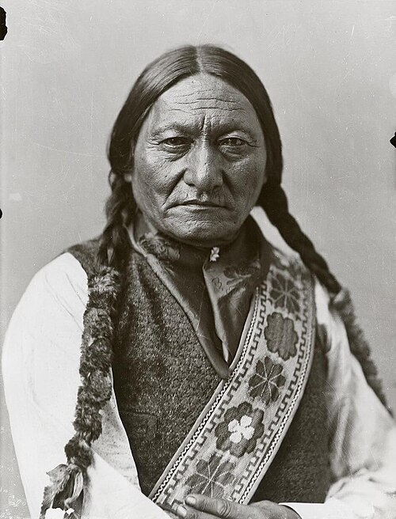
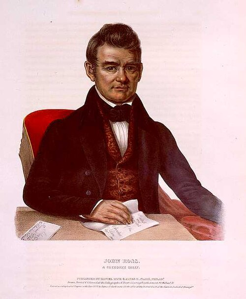
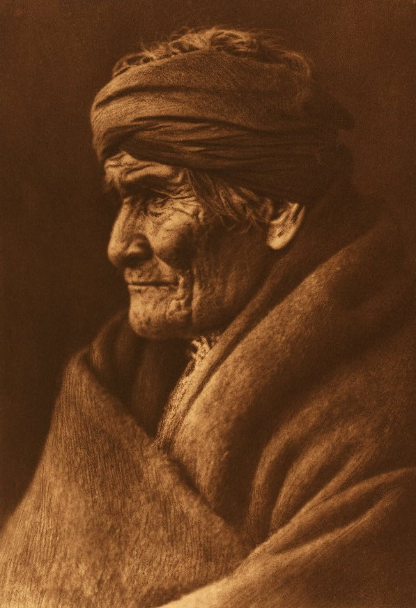

Önemli Kabileler

Lakota (Sioux)
Great Plains'in ünlü atlı avcıları. Oturan Boğa ve Kızıl Bulut gibi liderleriyle ABD ordusuna karşı direnişleri efsaneleşmiştir.
📷 Oturan Boğa, Montreal 1885 · Kamu malı

Navajo (Diné)
Amerika'nın en kalabalık kabilelerinden. Dokumacılığı ve kum resmi sanatıyla ünlüdürler; "Uzun Yürüyüş" trajedisi tarihlerine damga vurmuştur.
📷 Navajo tıpbabası, E.S. Curtis 1900 · Kamu malı

İrokezler (Haudenosaunee)
Altı ulusun oluşturduğu birlik, demokratik konsey sistemiyle dünyanın en eski yaşayan federasyonlarından biri sayılır.
📷 "Genç Şef", J. Trumbull · Kamu malı

Cherokee
Kendi alfabesini (Sekoya'nın hece yazısını) geliştiren, gazete çıkaran ve anayasası olan köklü bir halk. Portrede şef John Ross.
📷 Şef John Ross · Kamu malı

Apache
Çöl ve dağ hayatına mükemmel uyum sağlamış, ünlü liderleri Geronimo ile bilinen cesur savaşçılar halkı.
📷 Geronimo, E.S. Curtis · Kamu malı
Çerokiler Öncesi Uygarlıklar
Cahokia gibi dev toprak höyük şehirleri, Avrupa öncesi Kuzey Amerika'nın büyük şehirleriydi.